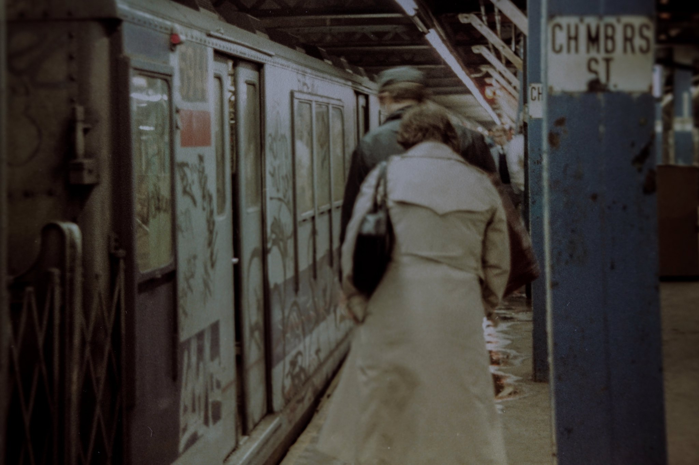

La Caridad, Broadway and 78th

Bronx, 1973
La Caridad, Broadway and 78th
Bronx, 1973

NYC subway car interior, circa 1980. The photo accompanied a story in today’s New York Daily News that if the Metropolitan Transportation Authority doesn’t get substantial federal funding necessitated by pandemic-related income shortfalls, the subway system could return to the “bad old days.” More pics at the link:
MTA officials warn NYC subway could return to bad old days without $16.2B in COVID relief

Somewhere in the Bronx, sometime in the 80s.

Stand clear of the closing doors.
Tar beach, 1981
Billy Idol of Generation X in NYC, 1978. Photo by Roberta Bayley.
South Bronx life, 135th St and Willis Ave, 1976.
Dumpster diving in Soho, 1977

Looking down at 42nd Street between 7th & 8th Avenues, 1966, with a view of the Empire Theater.
Photo from the collection of Al Ponte
Historical Remnants Inside the AMC Empire 25 Theater in Times Square

Out for a stroll, upper East side, 1975

Pride March, 1970

Bad Penny in Times Square
Love your blog it brings me back to my childhood. Any photos of East Harlem around 112-116th streets? My dad had a pizzeria on a 112th between 1st and 2nd...It would be cool to see an old photo of that area. Have a wonderful day!!
Thanks! I’ve got a couple of shots here:

Willy Spiller, New York, late 70s/early 80s

Photo by Takayuki Ogawa, 1967-68